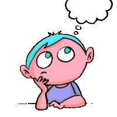

Conclusion Paragraph
The conclusion paragraph is the last paragraph of the literary analysis. You have one last step to finish your literary analysis once and for all. This paragraph concludes your entire essay and leaves the reader off thinking about their life.
What You Need:
- Concluding Sentence That Connects To The Prompt
- Restated Thesis Statement
- Ending Statement That Makes The Reader Think
Concluding Sentence
The concluding sentence is the first sentence of the conclusion paragraph. It is one basic sentence that sums
up the entire essay but, at the same time, doesn't end it. This paragraph should also start with a concluding
transiton so that the reader knows that the entire essay is coming to a finish. For example, "To Sum It All
Up" or "In Conclusion" would be good starting to this paragraph.
Ex. To sum it all up, fear drives the characters into doing immense things such as killing a person and building an entire
rocket.

Restated Thesis
This is also one sentence very similar to the thesis statement that ends off the introduction paragraph. This is to sum up the essay and finally say what it was all about. This includes all of the same things as the first paragraph other than the author names.
Ex. In the stories, “Dark They Were and Golden Eyed” and /The Monsters are Due on Maple Street/, the authors show the measures that the characters are willing to go to just because they have a little bit of fear instilled into them.
Statement To Make Readers THINK
This statement is to leave the reader off thinking. This is to make sure the entire essay does not have a very boring ending, but instead interests the reader. As they read this sentence, they will constantly be thinking which makes it end the essay off better. This will be the last sentence of not only the conclusion paragraph but the entire essay.
Different Ways to Make the Reader Think
- Statement - This will be a sentence(s) that tells the reader something interersting to make them think.
Ex. Fear is something that will always be in your mind. It is something that you are scared of and it is in everybody.
- Question - This will be a question(s) that asks the reader something deep. It will make them dig far into their mind just to find the answer.
Ex. Is there anything that you have been scared of? How did you react when you saw it? Did you back down and let it scare you, or stand up and confront it?
Putting It Together (Ex. Will Use Question Ending)
Ex.To sum it all up, fear drives the characters into doing immense things such as killing a person and building an entire rocket. In the stories, “Dark They Were and Golden Eyed” and /The Monsters
are Due on Maple Street/, the authors show the measures that the characters are willing to go to just because they have a little bit of fear instilled into them. Is there anything that you have been scared of? How did you react when you saw it? Did you back down and let it scare you, or stand up and confront it?